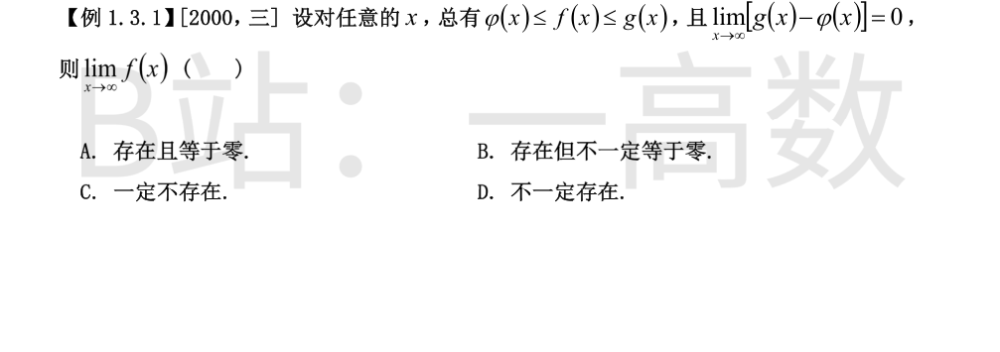
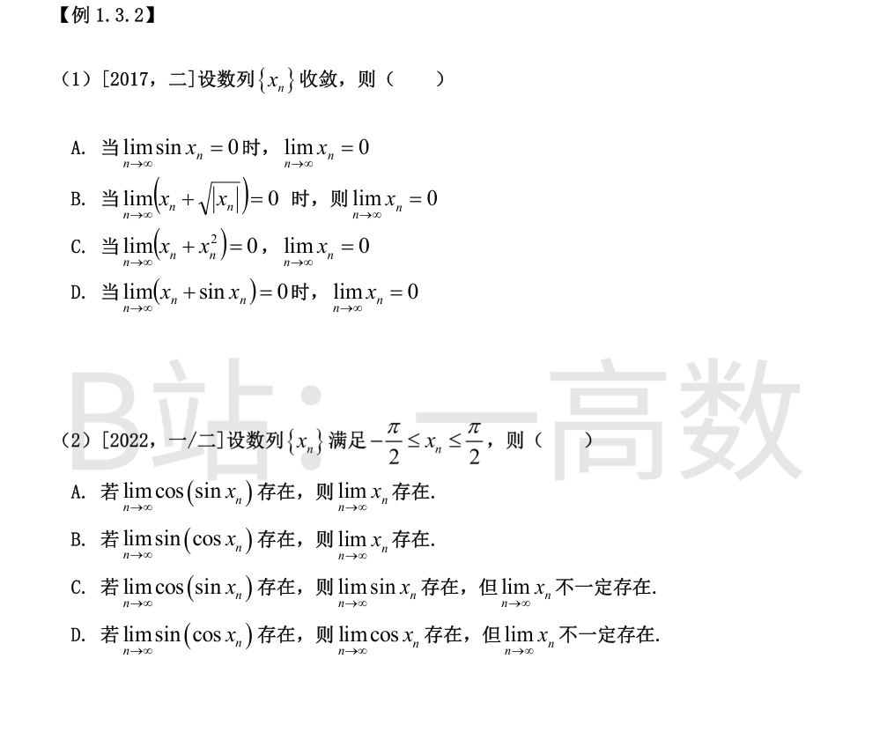
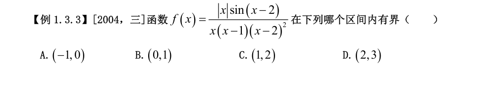
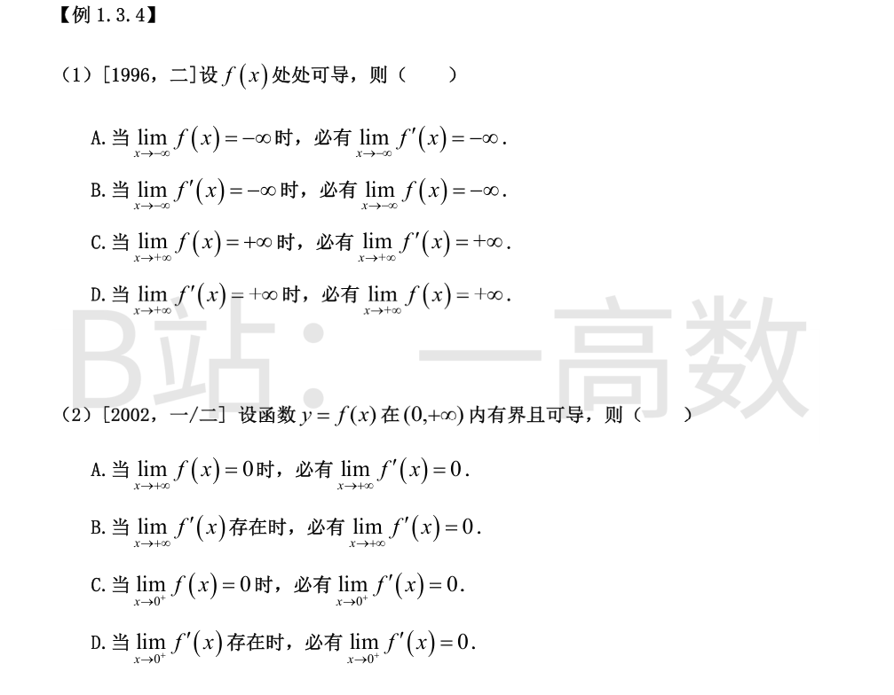
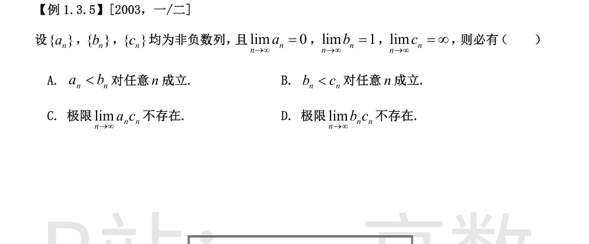
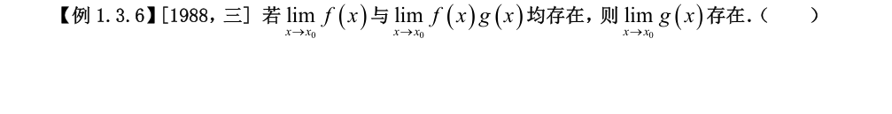

夹逼准则：φ(x) ≤ f(x) ≤ g(x) 且 lim(g(x) − φ(x)) = 0 ⟹ lim f(x) 存在；但其值不一定为零（如 φ=f=g=1 时极限为 1），故选 B。

设 $\lim\limits_{n\to\infty}x_n=a$。因 $\{x_n\}$ 收敛，各选项可利用连续性取极限：
**A**：$\sin x_n\to\sin a=0\Rightarrow a=k\pi$，未必为 $0$。反例 $x_n\equiv\pi$：$\sin x_n\to 0$ 而 $\lim x_n=\pi$。错。
**B**：$a+\sqrt{|a|}=0\Rightarrow a=-\sqrt{|a|}$，两边平方且 $a\le 0$，得 $a^2=|a|=-a\Rightarrow a=0$ 或 $a=-1$。反例 $x_n\equiv-1$：$x_n+\sqrt{|x_n|}=-1+1=0\to 0$，而 $\lim x_n=-1\ne 0$。错。
**C**：$a+a^2=0\Rightarrow a=0$ 或 $a=-1$。同样 $x_n\equiv-1$：$x_n+x_n^2=0\to 0$，而 $\lim x_n=-1$。错。
**D**：$a+\sin a=0$。令 $h(a)=a+\sin a$，则 $h'(a)=1+\cos a\ge 0$，且 $h'$ 仅在孤立点 $a=(2k+1)\pi$ 处为零，故 $h$ 在 $\mathbb{R}$ 上严格单增；又 $h(0)=0$，所以 $h(a)=0\Leftrightarrow a=0$，即 $\lim\limits_{n\to\infty}x_n=0$ 必成立。正确。
选 D。
**先看 B、D（$\sin(\cos x_n)$ 型）**：由 $-\frac{\pi}{2}\le x_n\le\frac{\pi}{2}$ 得 $\cos x_n\in[0,1]$。$\arcsin t$ 在 $[0,1]$ 上连续，且 $u\in[0,1]$ 时 $\arcsin(\sin u)=u$。若 $\sin(\cos x_n)\to L$，则
$$\cos x_n=\arcsin\bigl(\sin(\cos x_n)\bigr)\to\arcsin L,$$
即 $\lim\cos x_n$ 必存在。但取 $x_n=(-1)^n\theta$（$0<\theta\le\frac{\pi}{2}$）：$\cos x_n\equiv\cos\theta$，$\sin(\cos x_n)\equiv\sin(\cos\theta)$ 收敛，而 $x_n$ 在 $\pm\theta$ 间振荡，$\lim x_n$ 不存在。故 B 错，**D 正确**（$\lim\cos x_n$ 存在，但 $\lim x_n$ 不一定存在）。
**再看 A、C（$\cos(\sin x_n)$ 型）**：$\cos$ 为偶函数，$\cos(\sin x_n)=\cos|\sin x_n|$，在 $[-1,1]$ 上不单射。取同样的 $x_n=(-1)^n\theta$：$\cos(\sin x_n)\equiv\cos(\sin\theta)$ 收敛，但 $\sin x_n$ 交替取 $\pm\sin\theta$，$\lim\sin x_n$ 不存在（C 错），当然 $\lim x_n$ 也不存在（A 错）。
选 D。

$f$ 在各开区间内连续；连续函数在有限开区间上有界 $\Leftrightarrow$ 端点处单侧极限有限。逐点考察可疑间断点：
**$x\to 0$**：$f(x)=\dfrac{|x|}{x}\cdot\dfrac{\sin(x-2)}{(x-1)(x-2)^2}$，前者有界（$\pm 1$），后者趋于有限值
$$\lim_{x\to 0}\frac{\sin(x-2)}{(x-1)(x-2)^2}=\frac{\sin(-2)}{(-1)\cdot 4}=\frac{\sin 2}{4},$$
故 $x\to 0^{\pm}$ 两侧单侧极限都有限；左端点 $x=-1$ 是 $f$ 的连续点。所以 $f$ 在 $(-1,0)$ 上有界，**A 正确**。
**$x\to 1$**：分子 $\to\ |1|\cdot\sin(-1)=-\sin 1\ne 0$，分母含因子 $(x-1)\to 0$，故 $|f|\to+\infty$，$f$ 在 $(0,1)$ 内无界，B 错。
**$x\to 2$**：$\sin(x-2)\sim x-2$，故
$$f(x)\sim\frac{|x|\,(x-2)}{x(x-1)(x-2)^2}=\frac{1}{(x-1)(x-2)}\sim\frac{1}{x-2}\to\infty,$$
$f$ 在 $(1,2)$、$(2,3)$ 内均无界，C、D 错。
选 A。

**A 错**：$f(x)=x$，$x\to-\infty$ 时 $f\to-\infty$，但 $f'\equiv 1\not\to-\infty$。
**B 错**：$f(x)=x^2$，$f'=2x\to-\infty$（$x\to-\infty$），但 $f=x^2\to+\infty$ 而非 $-\infty$。
**C 错**：$f(x)=x$，$x\to+\infty$ 时 $f\to+\infty$，但 $f'\equiv 1\not\to+\infty$。
**D 证明**：由 $\lim\limits_{x\to+\infty}f'(x)=+\infty$，存在 $M>0$ 使 $x>M$ 时 $f'(x)\ge 1$。对任意 $x>M$，由拉格朗日中值定理存在 $\xi\in(M,x)$，
$$f(x)-f(M)=f'(\xi)(x-M)\ge x-M,$$
故 $f(x)\ge f(M)+(x-M)\to+\infty$，即 $\lim\limits_{x\to+\infty}f(x)=+\infty$。正确。
选 D。
**B 证明**：设 $\lim\limits_{x\to+\infty}f'(x)=A$ 存在。若 $A>0$，存在 $M>0$ 使 $x>M$ 时 $f'(x)>\frac{A}{2}>0$；由中值定理 $f(x)-f(M)=f'(\xi)(x-M)>\frac{A}{2}(x-M)\to+\infty$，与 $f$ 有界矛盾。若 $A<0$，同理 $f(x)\to-\infty$，仍矛盾。故必有 $A=0$。B 正确。
**A 错**：$f(x)=\dfrac{\sin x^2}{x}$ 在 $(0,+\infty)$ 有界且 $\lim\limits_{x\to+\infty}f(x)=0$，但
$$f'(x)=2\cos x^2-\frac{\sin x^2}{x^2}$$
因振荡项 $2\cos x^2$ 而无极限。A 错。
**C、D 错**：$f(x)=\sin x$ 在 $(0,+\infty)$ 有界可导，$\lim\limits_{x\to0^+}f(x)=0$，而 $\lim\limits_{x\to0^+}f'(x)=\lim\limits_{x\to0^+}\cos x=1\ne 0$ 且存在。C、D 均被否定。
选 B。

**A、B 错**：极限存在只保证"充分往后"不等式成立，不保证对任意 $n$ 成立。反例：$a_1=2,\ b_1=1,\ c_1=0$，$n\ge 2$ 时取 $a_n=0,\ b_n=1,\ c_n=n$，各极限条件均满足，但 $a_1>b_1$、$b_1>c_1$。
**C 错**：$\lim a_nc_n$ 属 $0\cdot\infty$ 未定型，可能存在：取 $a_n=\dfrac{1}{n},\ c_n=n$，则 $a_nc_n\equiv 1$ 收敛。
**D 对**：由 $b_n\to 1$，存在 $N$ 使 $n>N$ 时 $b_n>\dfrac{1}{2}$，于是
$$b_nc_n>\frac{1}{2}\,c_n\to+\infty,$$
即 $\lim\limits_{n\to\infty}b_nc_n=+\infty$，极限（有限数意义下）不存在。D 必真。
选 D。

该命题**错误**。
仅当 $\lim\limits_{x\to x_0}f(x)=A\ne 0$ 时，才可由 $g(x)=\dfrac{f(x)g(x)}{f(x)}$ 及商的极限法则得 $\lim g=\dfrac{\lim fg}{\lim f}$ 存在；当 $A=0$ 时结论可能失效。
反例：取 $x_0=0$，$f(x)=x$，$g(x)=\sin\dfrac{1}{x}$，则
$$\lim_{x\to 0}f(x)=0,\qquad \lim_{x\to 0}f(x)g(x)=\lim_{x\to 0}x\sin\frac{1}{x}=0$$
均存在，而 $\lim\limits_{x\to 0}\sin\dfrac{1}{x}$ 不存在。
故 $\lim\limits_{x\to x_0}g(x)$ 不一定存在，答案为 ×。